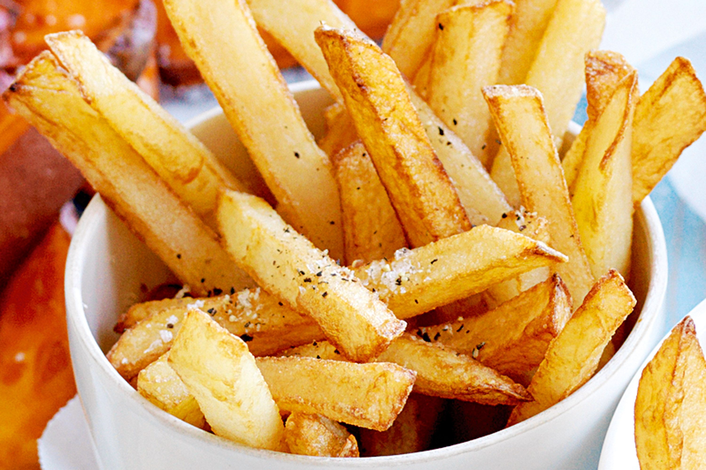

Fries

The traditional french fries. The world is jealous of them. They're crusty, tasty and you can eat them with a lot of different sauces
All you need is potatoes and good seasonings!
Ingredients
- 2 1/2 pounds russet potatoes, peeled
- 1 cup vegetable oil for frying
- 1 cup all-purpose flour
- 1 teaspoon garlic salt
- 1 teaspoon onion salt
- 1 teaspoon paprika
- 1 teaspoon salt
- 1/2 cup water, or as needed
- Slice the potatoes and place them in cold water to prevent browning.
- Sift the flour and seasonings, then gradually stir in water to make a batter.
- Drain and dry the sliced potatoes, then dip in the batter.
- Fry the potatoes until golden brown and crispy.